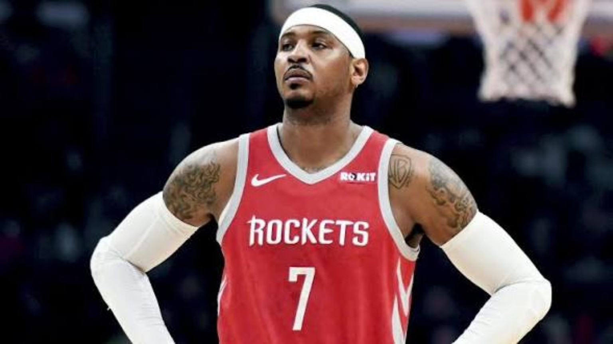

THE
FALL.
The decline started late in New York. OKC exposed the role adjustment. Houston made the league decide too quickly that the story was over.

THE DECLINE STARTED BEFORE OKLAHOMA CITY.
The end of the Knicks tenure had already started to chip away at the prime version. Injuries, bad roster situations and the Phil Jackson era turned the final New York seasons into something heavier than basketball.
Once Melo left, another reality hit at the same time: he was no longer the guy. For the first time in his career, the role had to change before his instincts did.
A BAD FIT MET A SLOW ADJUSTMENT.
Oklahoma City put Melo next to a ball-dominant Russell Westbrook and Paul George, who quickly became the clear second option. That left Carmelo trying to function as a third option for the first time in his career.
The system did not naturally cater to the things that had made him great — holding a matchup, working from the elbow or post, finding rhythm through touches and isolations.
Melo still had to adjust. But calling the entire season proof that he was finished ignores how abrupt the role change was.

TEN GAMES BECAME A VERDICT.
Houston should have been another chance. Instead, it was another third-option setup next to two ball-dominant guards in James Harden and Chris Paul.
Melo played only 10 games for the Rockets. He never really had time to acclimate before the partnership was effectively over.
That is the part that still baffles 4DK: the league went from debating whether Melo could still be a star to acting like he could not help anyone at all.
FOR A WHILE, IT LOOKED LIKE THE CAREER WAS OVER.
After Houston, 4DK thought Melo might genuinely be done. The phone did not ring, the league moved younger, and the narrative around his willingness to accept a role hardened.
Then Portland called — and the entire ending changed.